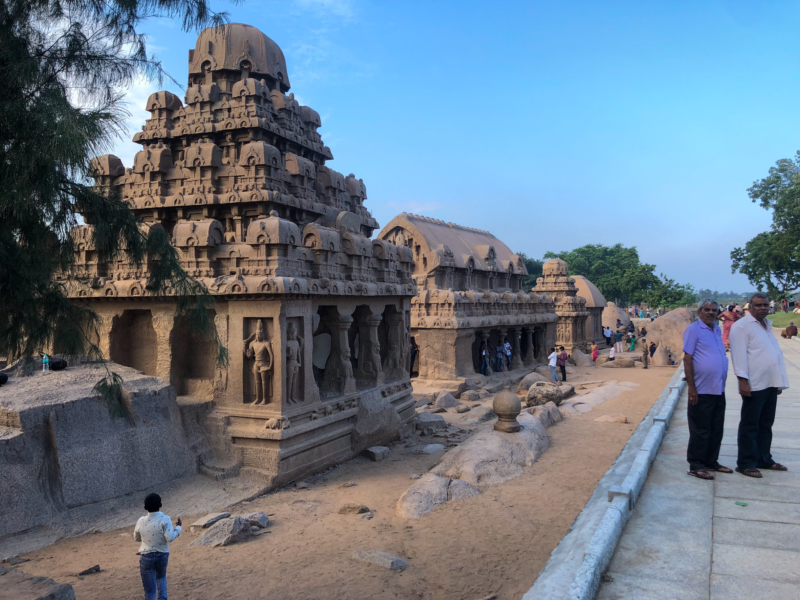
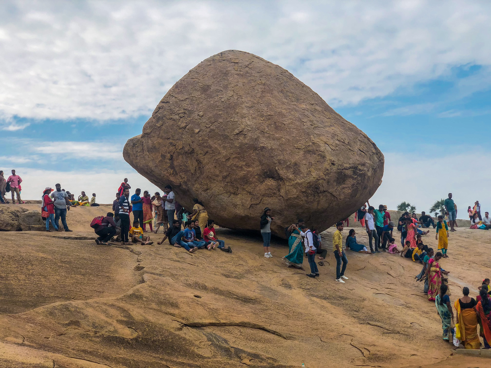

〇ファイブ・ラタ
さっそくチェンナイのおすすめの観光地をご紹介していきます！
まずはじめはファイブ・ラタです。ここはチェンナイの南に位置するマハーバリプラムという場所にあります。
岩でできた象や寺院があり、その建造物が5つある事からこの名前になったそうです。
下にファイブ・ラタの外観を載せておきます！ぜひご覧になって下さい！

さらに知りたい方は↓にファイブ・ラタの詳しく情報が載っているサイトのリンクを張っておくのでご覧下さい！
ファイブ・ラタの詳しいサイトのリンク〇ショーア・テンプル
次に「ショーア・テンプル」についてご紹介していきます！
私がおすすめする理由は、このテンプルのすぐ近くに海があり、海の潮風を感じながら遺跡を見ることが出来、心が落ちつく場所です
下にショーア・テンプルの外観を載せておきます！ぜひご覧になって下さい！

さらに知りたい方は↓にウィキペディアのリンクを張っておくのでご覧下さい！
ショーア・テンプルの詳しいサイトへのリンク〇クリシュナ・バターボール
最後に「クリシュナ・バターボール」についてご紹介していきます！
私がおすすめする理由は、非常に不思議な丸い岩が坂に存在しているのですが、いつ転がってもおかしくないです。
さらに丸い岩の下から手を岩に向けて写真を撮ってもらうとあたかも岩を持っているかのように写真を撮ることが出来ます。ぜひ行った際に挑戦してみてください。
下にクリシュナ・バターボールの外観を載せておきます！ぜひご覧になって下さい！

さらに知りたい方は↓にウィキペディアのリンクを張っておくのでご覧下さい！
クリシュナ・バターボールの詳しいサイトへのリンク以上が私がおすすめするチェンナイの観光地の紹介になります。見てくださりありがとうございました。
ここまで読んでいただきありがとうございました。ところで、最近おみくじをひいた経験はありますか？
この文章の下におみくじのページに行くことが出来るリンクを作成しました。ぜひお時間ある方は下のURLから入ってみてください！！！
「おみくじ」へのリンク特に「おみくじ」をやりたくないという方は本ページのトップに戻りたい方は下のリンクを押して下さい。
トップに戻る特にホームのトップに戻る必要もないという方は下のリンクから前のページに戻ることが出来ます。
～デリー大学での生活とインドのおすすめ観光地の紹介～へのリンク